HR_BIM_Asset — HR / Tenancy / Operate Module (ALPHA)¶
⚠ DEMONSTRATOR — NOT OFFICIAL. Every screen and every generated output (payslip, invoice, report, export, print) carries the
CONTOH — TIDAK RASMI/SAMPLE — NOT OFFICIALwatermark. Demo values only — this is a demonstrator and a policy counter-proposal, not a certified/compliant production system.
HR_BIM_Asset turns a finished building into its operate-phase (7D) cockpit. Open any building in the Viewer and a single toolbar pill lets you ask operational questions on the geometry itself — which units are occupied, who is physically present, what equipment is due for service — each answered by a colour wash over the real rooms.
One model · a few lenses, each answering exactly one question · all off one signed op-log.
This is a task-oriented manual. If you just want to use it, read Getting started and Common tasks. If you want to know how it works (or you administer the data), read Under the hood.
Getting started (about 5 minutes)¶
You need nothing but the Viewer and a building that carries some operate data (the HHS office sample does).
- Open the building. In the Viewer, load a building (e.g. the HHS Office sample). Let the 3D model finish streaming in — the FM pill only lights once the model is FULLY streamed (a half-loaded model won't show a lens the tail of the stream hasn't carried in yet, so the pill deliberately waits).
- Reveal the toolbar. On a fresh load the icon rail is tucked behind the ⋯ button (bottom-right) — tap it to unfold the full icon rail.
- Find the
FM / Operatepill. Look for the building glyph in the rail — it turns blue once tapped (see the screenshot below). It appears only when the building has operate data — if you don't see it, there's nothing to operate yet (see Troubleshooting). - Open the drawer. Tap the pill — it highlights blue and a small FM / Operate drawer opens listing the lenses. Lenses with data are bright and clickable; lenses with no data for this building are greyed and marked "no data".
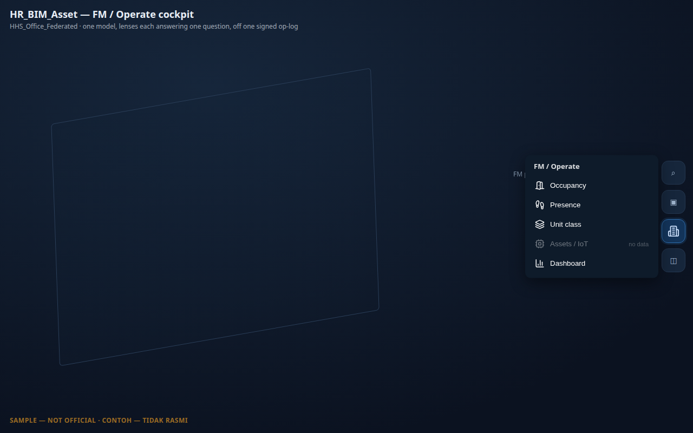
(The drawer has since grown to 8 entries — the 4 lenses above plus Tenancy / AD, Dashboard, Payslip, and Leave; see The lenses at a glance for the full current list.)
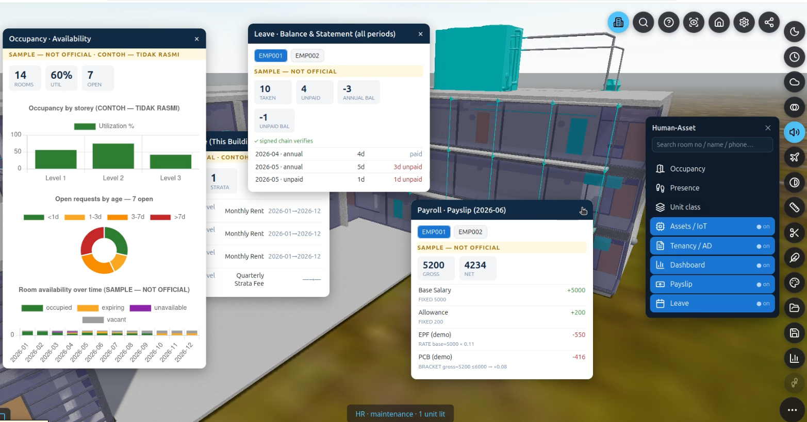
- Turn on a lens. Tap Occupancy. Tapping a row applies the lens and closes the drawer; re-tap the pill to reopen it and see which lens is active (highlighted, "● on"). The status bar reads e.g. “HR · occupancy · 11 units lit” — that status line is the reliable readout of what's lit; on this sample building the bound elements are small real fixtures, so at a building-wide view the wash can be subtle — zoom toward a room to see an individual tinted element close up.
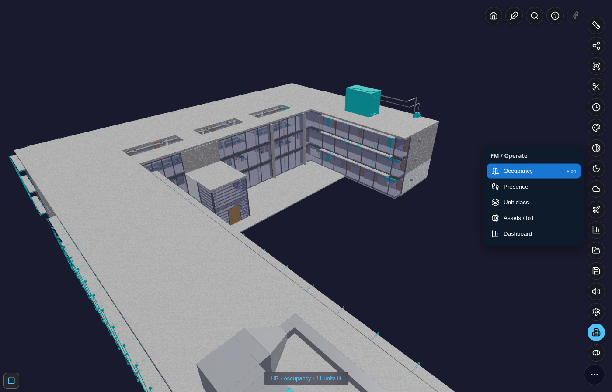
- Turn it off. Tap the lens row again (or pick another). The model is restored exactly — overlays never leave residue and never disturb other panels.
That's the whole interaction model: open → reveal toolbar → pill → drawer → toggle a lens. Everything below is variations on it.
Common tasks¶
See which rooms are occupied¶
- Open the FM / Operate drawer → tap Occupancy (see the screenshot above).
- Read the wash:
| Colour | Meaning |
|---|---|
| 🟢 green | occupied — an active booking covers now |
| 🟡 amber | expiring — the lease ends within the horizon |
| ⚪ grey | vacant — no booking (vacancy is read from the absence of one, never a faked tenant) |
| 🟣 purple | unavailable — a maintenance / renovation blackout |
| 3. The status bar tells you how many units lit (verified live: "HR · occupancy · 11 units lit" on the HHS | |
| sample). Toggle off to restore. |
Where the colour actually lands. A room (
IfcSpace) usually isn't its own mesh — the lens tints its real rendered contained members instead (see How a unit binds to the model). On the HHS sample those members are small fixtures, so from a building-wide view the wash reads as a subtle tint; the GardenWorld warehouse below tints a whole aisle-floor at once and is the clearest example to look at first if you want to see the effect from a distance.Tenancy is part of Occupancy. An earlier alpha had a separate Tenancy lens; it's now folded in. Occupancy replays each room's signed booking log (
ASSIGN/RELEASE/UNAVAIL), so it is the lease-status superset.
See who is physically here right now — with people you can walk up to¶
- Open the drawer → tap Presence. Zones tint by live headcount density (light → deep blue as more people are present).
- Zoom in. Each present person becomes a little avatar standing in the room where their signed check-in put them. People cluster in a ring when several share a room — you're looking at the workforce in situ, not a number in a grid.
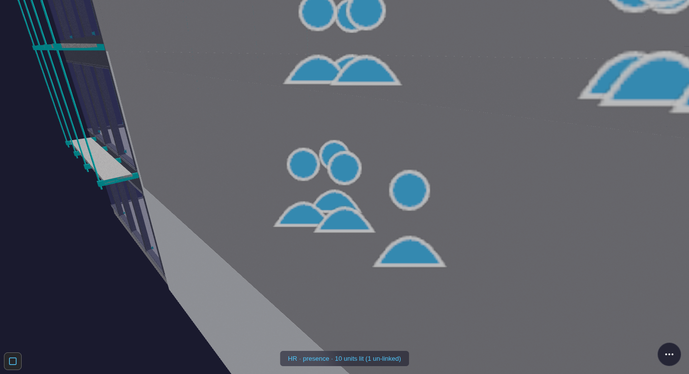
- Hover an avatar → their card (name, room, since when, status), watermarked — exactly as captured above. Draw nearer and the nearest person auto-labels; zoom out and the avatars collapse back to dots — an automatic level-of-detail ladder (dot → mini → full) so a full floor never turns to soup. The screenshot above catches the ladder mid-transition: a full-figure cluster close to camera, mini-dome clusters further back.
- Headcount comes from signed check-ins — a room with no check-in has no avatar (never a faked person).
- The Presence roster (the drawer's own list of every check-in for the period) carries an open ↗ link
per person straight to their
AD_Userrecord — the first bidirectional click-through for a Person in this module (every other pane already had one). No reverse direction (an ERP record flying you back into the 3D model) exists yet — that's a genuinely new capability, tracked separately, not built here.
Spot equipment that needs service¶
- Open the drawer → tap Assets / IoT.
- Equipment tints ok (green) · due (amber) · overdue (red), driven by each asset's next-due date and cycle.
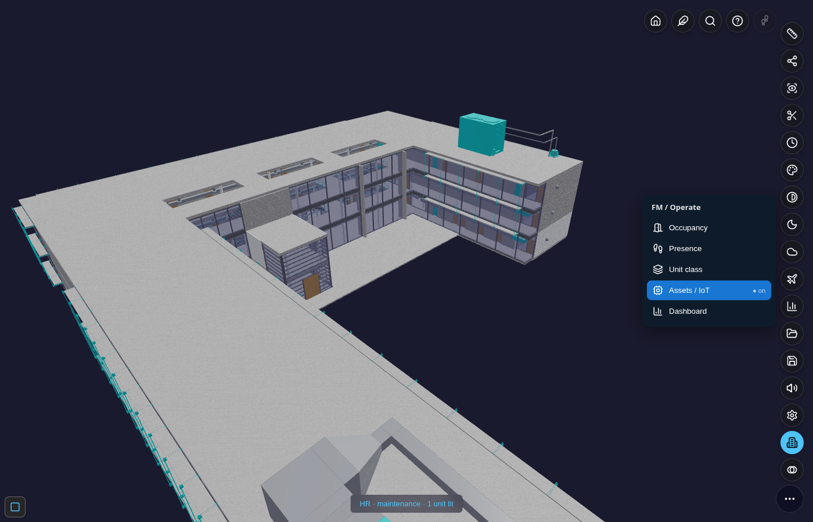
- If this entry is greyed “no data”, the building simply carries no asset/IoT records — nothing is faked.
The IoT sensor + CCTV cockpit (mockup)¶
Tapping Assets / IoT does two things at once: it tints the asset in the model (above) and opens a
supplementary pane — a small operate-cockpit showing what a real IoT feed would look like. This whole pane is
an explicit mockup — every reading is a deterministic synthetic curve (same input, same output, always —
never Math.random), watermarked, and never claimed as a real sensor value. It exists to stub out the
finished shape: every reading, camera and tone already compiles onto a real ERP record, so wiring in an
actual sensor feed later is a data-source swap, not a rebuild.
Seven sensor channels, last 24 hours — each with its own icon, colour and 24h trend bar, and each bound to its own real element in the model (not a shared placeholder):
| Icon | Sensor | Bound to (a real element) |
|---|---|---|
| 🌡️ | Temperature | a supply-air diffuser |
| 🔧 | Boiler Pressure | the rooftop mechanical plant |
| 🔊 | Sound Level | a ceiling diffuser, open-plan floor |
| 🌫️ | Dust (PM2.5) | a ceiling diffuser, open-plan floor |
| ☀️ | Solar Output | the roof sun-shading structure |
| ⚡ | Electrical Load | the Level 1 main distribution panel |
| 🚶 | Motion (PIR) | a Level 1 entrance door |
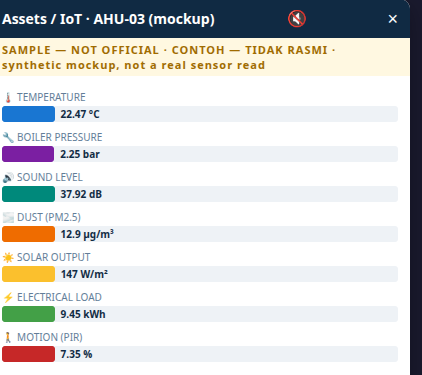
Clicking any bar flies the camera to that sensor's own real position — not a single shared spot — and briefly rings it orange, a wider "establishing" shot than a normal zoom so the surrounding room/plant/entrance stays visible (a deliberate "wow, here's where this actually is", not a nose-to-mesh close-up).
Alarm tones, muted by default. Each bar's 24h value loop can ALSO chime — click the 🔇 in the pane header to turn it on (🔊). Pitch rises the closer a reading sits to its own observed extreme (a calm low tone vs a higher, more urgent one — never a fabricated "danger threshold", just the same range already shown on the bar). Every sensor has its own distinct tone character (a different waveform, and 1–3 quick "blips") so you can tell which sensor is alarming by ear alone, without looking at the screen — muted by default so opening the pane is never noisy by surprise.
A CCTV mockup grid and the ERP billing table, scrolled further down the same pane — six 📷 camera tiles
(explicitly captioned "MOCKUP — NO REAL FEED", no invented video, each bound to its own real entrance/corridor
door and clickable the same way as a sensor bar), and underneath, each sensor's latest reading compiled into
a billable line — a real C_OrderLine (quantity, unit of measure, RM amount plus its USD equivalent)
under a C_Order header, the same "compile into the real ERP dictionary, don't invent a parallel one"
discipline the rest of this module follows:
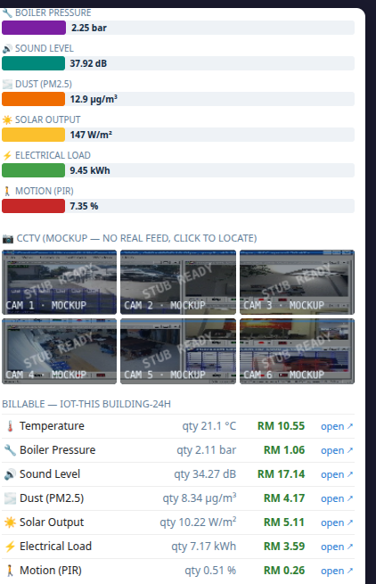
The sensors and cameras "talk" to each other. Every sensor and camera already knows which storey it's on — so clicking a sensor also briefly rings the CCTV tile(s) on the same floor, a real (if simple) connection between two otherwise-separate stubs, not a coincidence:
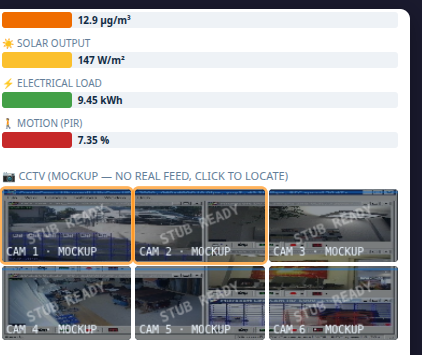
This is the clearest illustration of the module's Spatial ERP idea: a sensor bound to a real element in
the model is, at the same time, a line item a real ERP order can bill — one binding, two views (the 3D tint
and the ledger line), off the same record. Each billing row's open ↗ deep-links straight to that
C_Order/C_OrderLine in iDempiere — "here's a real billable document, ready for management's follow-up",
not just a mockup number:
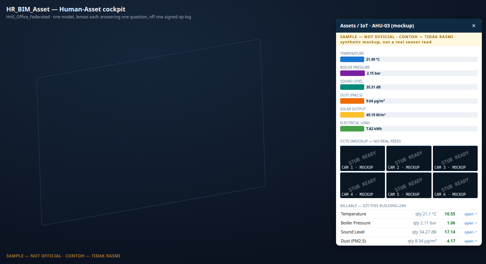
For developers — interfacing with the IoT/CCTV stubs¶
Everything above is two small, additive files, meant to be extended rather than rewritten:
hr_bim_asset/iot.js— the engine, no DOM.IoT.SENSORS(7 entries:key/label/icon/uom_name/uom_symbol/baseline/amplitude) andIoT.CAMERAS(6 entries:bim_guid/element/storey) are the two catalogs to extend for a new device — eachDEVICES[key]/CAMERAS[i]needs only a real boundbim_guidalready present in the loaded building (never invent one).IoT.demoSeries(id, hours)produces the deterministic 24h curve;IoT.billingLines(id, series, building, period, {erpQuery})compiles it onto realC_UOM/M_Product/C_Order/C_OrderLinerows (pass a realerpQueryreader — the same sync seam every other governed pane uses — to resolve durable seeded ids instead of a session-local mint).IoT.toneFreqFor (value, min, max)is the pure pitch-vs-range mapping behind the alarm tones — safe to call standalone to preview a tone's frequency.IoT.camerasOnStorey(storey)/IoT.camerasNearDevice(deviceKey)are the "ready-made connector" utilities behind the CCTV-ring behaviour above — a plain filter over thestoreyfield every device/camera already carries, reusable for any future "what else is near this thing" feature without new geometry work.viewer/hba_iot.js— the pane, additive/host-injected (imports nothing from the viewer, the host hands itA). Public surface:HBAIotPane.toggle(A)/.detect(A)/.isActive(). A new sensor/camera needs zero changes here — the bar/tile loops already iterateIoT.SENSORS/IoT.CAMERAS. The per-device zoom reusesHBALens.flyToZone(A, guid, {dist: 18})— thedistoption is generic (default 8 everywhere else), so any other pane can request the same wider "establishing shot" framing.
Jump straight to the ERP record¶
Every pane above that shows data compiled onto a real AD table carries a small open ↗ link per row —
Dashboard's Resources, Payslip's concept lines, Leave's unpaid entries, Tenancy's subscriptions, and IoT's
billing lines. Tapping it opens that exact record in erp/idempiere.html in a new tab — the same deep-link
mechanism the Viewer's own Find panel already uses to reopen a pushed Project Order (?client=garden&
window=<id>&record=<pk>), reused here rather than invented fresh. Every window number below was looked up
from the real AD dictionary, never guessed:
| Pane · row | iDempiere window | Native table |
|---|---|---|
| Dashboard → Resources | Resource | S_Resource |
| Payslip → concept line | Payroll Movement | HR_Movement |
| Leave → unpaid entry | Payroll Concept Catalog | HR_Concept (the "Leave without pay" concept it feeds — Leave has no native table of its own) |
| Leave → "Resource ↗" | Resource | S_Resource (a leave TAKE also compiles a real S_ResourceUnAvailable blackout on the employee's own resource — see Leave — balance & statement) |
| Tenancy → subscription | Subscription | C_Subscription |
| IoT → billing line | Sales Order | C_Order |
| Presence → roster row | User | AD_User (the employee's own identity record — see See who is physically here right now) |
No link appears on a row that doesn't (yet) resolve to a real record — the same non-invent discipline as everywhere else in this module: an absent link is honest, never a dead one.
Jump back from ERP into the model¶
The link above only ever pointed one way — BIM → ERP. Opening a record in erp/idempiere.html can now fly the
same Viewer scene back to the exact spot that record describes, using the kernel's own Zoom Across
mechanism (erp/zoom_across.js) — a generic "this record has a related surface" registry that already knew how
to jump to a Project/Project-Line/Manufacturing-Order; it just didn't know about any HR_BIM_Asset table yet.
- Open a Warehouse (the building itself), a Subscription (a Tenancy lease/strata charge), a Resource
or its Unavailability row (a person or a room), or a User (an employee's identity) record in
erp/idempiere.html. - The red Zoom Across pill lights up (same pill/shortcut
,as every other cross-surface jump in this kernel). Click it — the Viewer opens already scoped to that record's building, and where the record names a specific unit or person, it flies straight to it, not just the building's default view.
| ERP record | Lands the Viewer on | Notes |
|---|---|---|
M_Warehouse (a Building) |
The building, default view | A Warehouse record isn't finer than the whole building. |
C_Subscription (Tenancy/Strata) |
The leased unit, camera centred on that room | The unit guid is re-derived via the same Product→Locator→Warehouse join the Project-Line jump already used — C_Subscription itself carries no guid column. |
S_Resource — a room |
That room | S_Resource.Value holds a room guid directly. |
S_Resource / S_ResourceUnAvailable — a person |
That person's current zone, if they're checked in | S_Resource.Value holds the employee's code (e.g. EMP001), not a guid — the Viewer resolves it to a room via that employee's open attendance session, the same spatial fact the Presence roster already reads. No open session → lands on the building only, honestly. |
AD_User |
The person's building | Honest gap: AD_User carries no zone column anywhere in the dictionary — their exact current room isn't derivable from ERP data alone, so this one never claims finer than the building. |
Watch it end to end: open the Resource window on EMP001 (or a Presence roster row's "open ↗"), hit Zoom Across — the Viewer lands you in the exact room they last checked into, camera already there, not just the building loaded. That's the full loop this module has been building toward — precise both ways.
Classify spaces¶
- Open the drawer → tap Unit class.
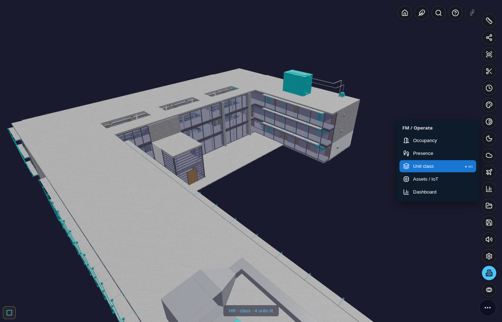
- Spaces tint residential (green) · commercial (orange) · office (indigo) · unclassified (grey) — same
caveat as Occupancy above: on the HHS sample the bound elements are small real fixtures (the small teal ticks
along the roofline in the screenshot), not a big room-sized colour wash, since this building's
IfcSpacerooms aren't drawn as their own filled mesh — zoom toward one of the 4 lit rooms to see its own tinted element close up, or read the honest "4 units lit" status line rather than relying on the wide shot. - The class is never guessed — see How a space gets its class.
Read the numbers (Dashboard)¶
- Open the drawer → tap Dashboard. An additive pane opens (it never touches the 3D scene) with three KPI tiles and three charts, every value a read-only fold of the same signed op-log — nothing typed by hand.
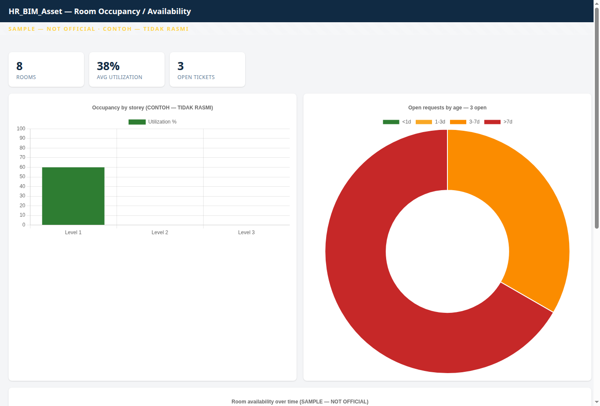
- What you're seeing:
- KPI tiles — rooms, overall utilisation, open tickets.
- Occupancy by storey — utilisation % per level (all storeys, not just the ground floor).
- Open requests by age — the SLA doughnut, tickets bucketed
<1d · 1–3d · 3–7d · >7d. - Room availability over time — a 12-month stacked trend of occupied / expiring / unavailable / vacant.
- Resources, scrolled further down the same pane — one row per real room (name · storey · utilisation),
each a genuine
S_Resourcerecord ("a room is a bookable resource"). Every row carries an open ↗ link straight to that record in iDempiere — see Jump straight to the ERP record below.
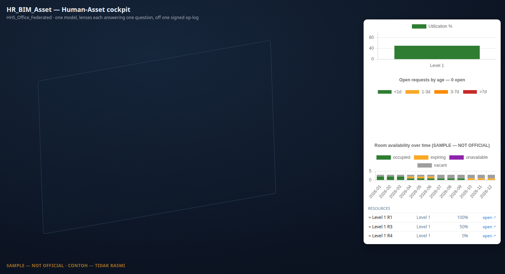
Payroll — payslip¶
- Open the drawer → tap Payslip. An additive pane opens with an employee picker and that employee's payslip — gross/net KPIs and a per-concept line trace (Base Salary, Allowance, EPF, PCB…), each line showing the rule it came from (glass-box, not a black-box number).
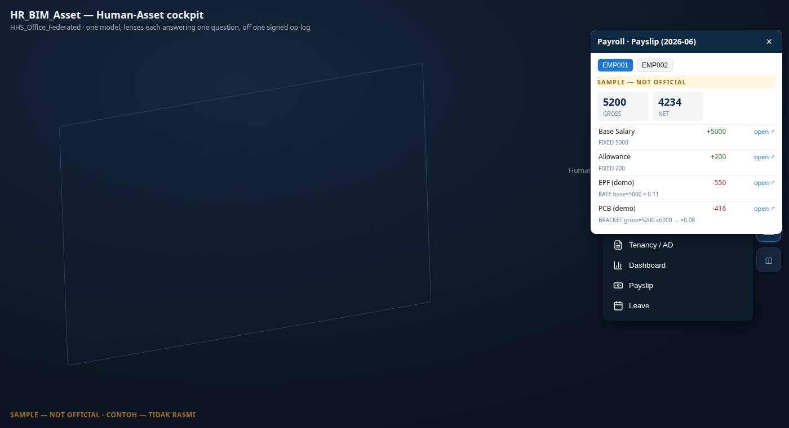
- Every line is a real
HR_Movementrow — the native iDempiere payroll table (dormant everywhere else this dictionary ships, first activated here). Each line's open ↗ deep-links straight to that movement record.
Leave — balance & statement¶
- Open the drawer → tap Leave. Balances (taken / unpaid / per-type) are replayed from a signed accrue/take op-log — never a stored number — with a chain-integrity check shown inline.
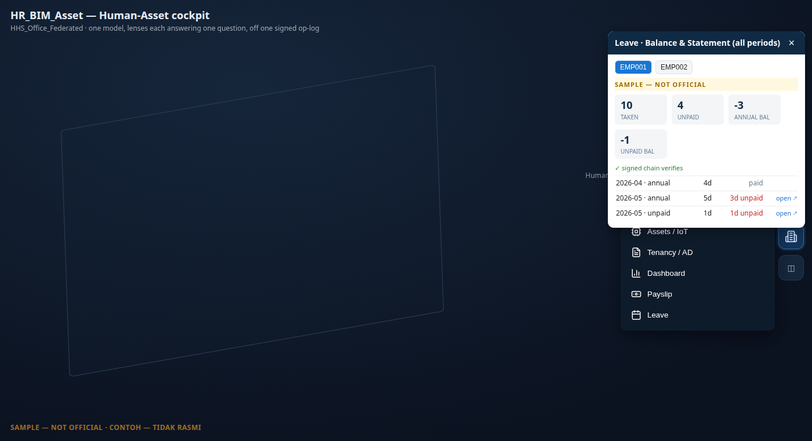
- Leave itself has no native AD table anywhere in iDempiere (checked against the real dictionary) — it's a genuine addition, not a reinvention of something that already existed. So an unpaid row's open ↗ doesn't point at a fabricated "leave record" window; it points at the real "Leave without pay" payroll concept the unpaid days feed into once payroll runs — the honest, real thing an unpaid entry actually compiles onto.
- Leave is also a resource-availability fact, not just a payroll deduction — a taken leave marks the employee
unavailable the same way a room's maintenance blackout does, via the real native
S_ResourceUnAvailabletable (the child "Unavailability" tab of the Resource window). A Resource ↗ link at the top of the pane opens the employee's own Resource record, where that blackout shows up in the standard iDempiere Resource Schedule — no separate leave-record UI to maintain, the same window Dashboard's Resources already deep-link into.
Tenancy — AD compile¶
- Open the drawer → tap Tenancy / AD. Every lease and strata charge in the building compiled onto real
iDempiere tables — a unit is a
M_Locator+M_Productunder aM_Warehouse-as-building, a lease or strata fee is a realC_Subscription(party · unit · cadence · term).
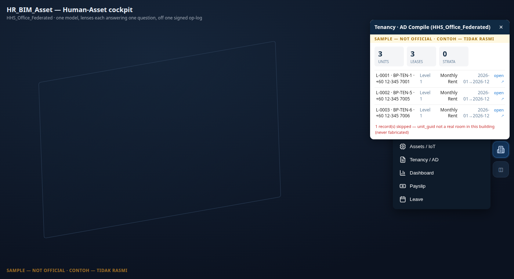
- Row click flies the camera to that unit (the same shared fly-to used by the Presence roster above); the
open ↗ link is separate and deep-links straight to the
C_Subscriptionrecord. A record whose unit doesn't resolve to a real room in this building is skipped, never fabricated — the footer says so. - The building itself compiles onto
M_Warehouse— but the only stock iDempiere window over that table is 139 "Warehouse and Locators", warehouse-industry language for what's conceptually a building. A second, purpose-named window — "Construction" — now sits alongside it over the identicalM_Warehouserow (the same convention iDempiere itself already uses forC_BPartner, which has 10 distinct windows over one table). Window 139 is untouched; "Construction" is just a role-appropriate second door onto the same record. In the Viewer, tapping a room or storey in the Find panel's Room lens surfaces an iDempiere ↗ link to this building's Construction record (building-grain — every room in one building shares the same warehouse record, there's no per-room window).
BIM BOM — assembly & recipe¶
- Open the drawer → tap BOM. Every room in the building is an assembly: the room itself plus every element physically contained in it, compiled onto iDempiere's native Bill of Materials tables — the same recipe structure iDempiere uses for manufacturing, not a bolt-on BIM-only concept.
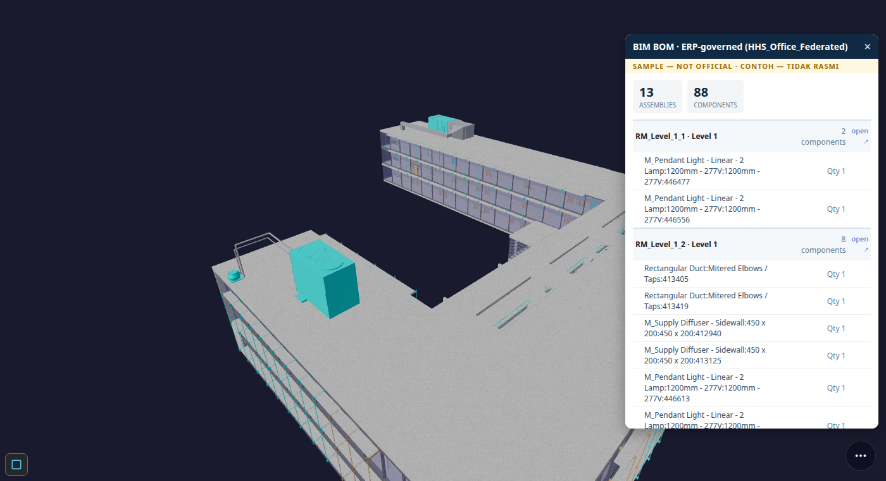
- Each assembly lists its component lines right underneath — one row per contained element, with the recipe quantity carried over from the model. Click an assembly row and the camera flies to that room. The open ↗ link deep-links to the real "Bill of Materials and Formula" window, the same one a manufacturing user would use for a physical product's recipe — a room's contents are read through the identical lens, not a parallel BIM-only screen.
- This pane has no 3D wash — it's a compiled list, like Tenancy and Dashboard.
A building with no rooms? Aisle-zones¶
Not every building has IfcSpace rooms. A warehouse like the GardenWorld sample has none — just elements
grouped into aisles. The module detects this and falls back to aisle-as-zone: each aisle becomes a zone,
its members are the real elements parked in that aisle, and the same lenses light it. Below, Occupancy is on
("HR · occupancy · 2 units lit") while Unit class and Assets / IoT are greyed because this warehouse carries
neither.
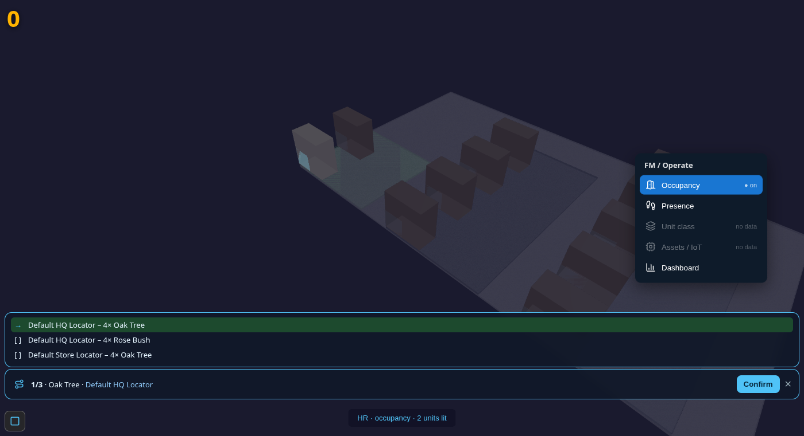
This is also the clearest example of the wash itself: the aisle's whole floor-slab tints green (occupied), an easy contrast to spot from a distance — unlike a room bound only to small fixtures (see the note under Occupancy above). Nothing is invented to make this work: the aisle labels and the element guids are all read from the model.
The lenses at a glance (reference)¶
| Lens | The one question | Colour legend |
|---|---|---|
| Occupancy | Is this unit occupied — and what's its lease status? | occupied #2e7d32 · expiring #f9a825 · vacant #9e9e9e · unavailable #8e24aa |
| Presence | Who is physically here right now? | 1 #90caf9 · 2–4 #1976d2 · 5+ #0d47a1 (+ per-person avatars near-field) |
| Unit class | What is this space? | residential #43a047 · commercial #fb8c00 · office #3949ab · unclassified #9e9e9e |
| Assets / IoT | What equipment needs service? | ok #2e7d32 · due #f9a825 · overdue #c62828 |
| Tenancy / AD | What's the AD-compiled lease/strata detail? | opens the AD-compile pane (no 3D wash) |
| BOM | What's this room's assembly recipe? | opens the BOM pane (no 3D wash) |
| Dashboard | Give me the numbers. | opens the charts pane (no 3D wash) |
| Payslip | What did this employee actually get paid, and why? | opens the payslip pane (no 3D wash) |
| Leave | What's this employee's leave balance and statement? | opens the leave pane (no 3D wash) |
Wake-aware, always. The FM pill appears only when the building has some operate data; inside the drawer
each lens is enabled only when its data exists here. No data → greyed “no data” → no clutter, nothing faked.
Watermark. Every screen and export carries CONTOH — TIDAK RASMI / SAMPLE — NOT OFFICIAL. The demo values
are illustrative; any real statutory rate or fee sits behind a research gate and is never shipped as fact.
Under the hood — the data model¶
You don't need this to use the lenses, but it explains why every wash is trustworthy.
-
One signed op-log. Everything — bookings, check-ins, tickets — is an append-only signed
kernel_op. Each op chains to the previous (verifyChain); amending a signed op breaks the chain. The lenses are pure replays of this log, so two reads give a bit-identical result and a vacant room is vacant from the absence of an op — never a fabricated value. -
Records (the “WHAT”). A handful of AD-defined models seed the demo: Tenancy (a lease), Strata (ownership/parcel), Asset (equipment, linking a
bim_guidto aniot_device+ a service schedule), and Request (a maintenance/service ticket). Each carries the guid of the room or element it concerns. -
How a unit binds to the model (the “WHERE”). A record lights a unit only when its guid resolves to a real mesh in the loaded building. An
IfcSpaceroom usually isn't drawn as its own mesh, so the lens resolves and tints it through its rendered contained members (rel_contained_in_space). A guid that resolves to nothing is honestly un-linked — shown nowhere, never a faked tint. For a room-less building the same join runs over aisle-zones (see above). Avatars stand at the centroid of a zone's rendered members. -
Occupancy = a signed resource ledger (
S_Resource-style). A room is a resource; youASSIGNa party to it for a period,RELEASEit early, or mark itUNAVAILfor a blackout. Availability at any month is the replay of that ledger — which is exactly what the Occupancy lens and the dashboard read. -
The periodic RUN engine (the “HOW”). One generic engine —
(period × parties × element-rules) → signed lines → GL— serves four profiles, so tenancy is “payroll inverted”, not a new build:
| Profile | Parties | Cash direction | Statement |
|---|---|---|---|
payroll |
employees | OUT | payslip |
tenancy |
active leases | IN (AR) | rent invoice |
strata |
owners / parcels | IN (AR) | fee notice |
maintenance |
assets | COST | work order |
Every line cites the rule it came from and recomputes exactly (glass-box), and every run posts a balanced
journal. The module boots and runs standalone on its own seed — no ERP required — and only lights up two
dotted-line adapters (GL posting, C_BPartner.isEmployee) when an ERP is present.
How a space gets its class (non-invent)¶
Class is resolved by strict priority and never guessed: (1) a real IfcSpace predefined_type from the
model, when present; else (2) the declared class on the lease record (a watermarked business datum); else
(3) unclassified. The HHS office sample carries no IFC space-type, so its demo leases declare their class —
the room guids are real, the labels are sample lease declarations.
Troubleshooting¶
| Symptom | What it means | What to do |
|---|---|---|
No FM / Operate pill |
The building has no operate data that resolves to a real element (no lease/asset/check-in binds to a drawn guid). | Expected on a bare model. Load a building with operate records (e.g. the HHS sample), or seed records bound to real guids. |
| A lens is greyed “no data” | That lens's data type isn't present here (e.g. no IoT assets → Assets / IoT greyed). | Normal and honest — the lens won't fabricate data to look busy. |
| A room I expected isn't lit | Either its guid doesn't resolve to a drawn element, or it's genuinely vacant (no booking). | Check the record's guid exists in the model; remember vacancy is the absence of a booking, not an error. |
| The dashboard charts are blank | Chart.js didn't load (offline / blocked). | The KPI tiles still read correctly; reload with the chart library reachable and the three charts render. |
| Toggled a lens off and the colours look odd | Overlays restore on toggle-off; a stuck state is rare. | Toggle the lens off again, or reopen the drawer — the scene restores fully (zero residue by design). |
The money + contract side (when ERP is loaded)¶
The deal and money half of a tenancy — the lease as a signed agreement, the rent run → AR
(C_Invoice → C_Payment → allocation → GL), the Request/ticket workflow, and the product catalog (rental vs
purchase, installment schedules) — lives in the Kernel-ERP guide → Tenancy. HR
supplies the people + access (party = C_BPartner, signed check-in, capability tokens); the Viewer supplies
the spatial view above; ERP supplies the money. One lease threads all three over the shared BIM model and
the one signed op-log — see Spatial ERP × BIM × HR — One Building, One Log.
Future roadmap (addendum)¶
Two directions under consideration, not yet built:
- Find ↔ FM linking. Today, Find (the Viewer's element search) and the FM / Operate drawer are separate surfaces — Find locates a spatial element, FM toggles a building-wide lens. The natural next step is linking them rather than merging them: extend Find's search index to also cover HR_BIM_Asset records (a tenant's name, a lease number, a ticket ID), so a search hit that resolves to an operate record both zooms to the unit and deep-links into the FM drawer already scoped to that record (e.g. searching a tenant opens Occupancy with their lease highlighted). One front door — "find anything, including people" — without forcing lens-toggle behaviour into a search box.
- Larger property-portfolio management. The compile-not-model foundation laid in this module (a leasable
unit already compiles to a real
M_Product/M_Locatorunder aM_Warehouse-as-building, a lease/strata charge is a realC_Subscription, an asset is a reala_asset) is structured to scale past a single demonstrator building — the same native AD tables carry a portfolio of many buildings/units without a new schema per building. Find↔FM linking would be the natural cross-portfolio search layer once more than one building is loaded at once.
Spec: prompts/RESUME_HR_BIM_ASSET.md (§FM-FAMILY · §REAL-BIND · §AISLE-ZONES · §RICH-DEMO · §AVATAR-LOD ·
§BINDING · §CLASS · §PILLAR 1–4 · §CRITICAL "Compile not Model"). Back to the BIM Viewer Guide.